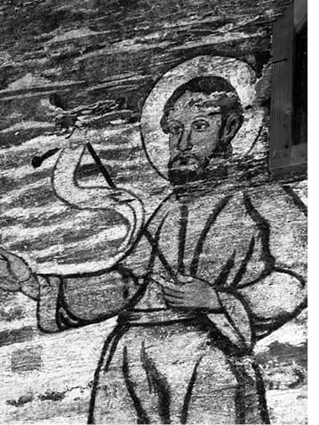

Bucurați-vă în Domnul! Bucurați-vă că Dumnezeu ne-a adunat la acest praznic pentru a-i lăuda, pentru a-i cinsti pe Sfinții Arhangheli Mihail și Gavril. Bucurați-vă, cuvioși părinți! Bucurați-vă, cuvioase maici! Bucurați-vă, preoți și credincioși, că Dumnezeu ne-a adunat împreună. La Sfânta Liturghie, preoții spun și răspund: „Hristos în mijlocul nostru!”, „Este și va fi!”. Cu adevărat, Hristos ne-a spus că acolo unde sunt adunați doi sau trei în numele Său, El este cu ei. Și credem și mărturisim că Hristos este cu noi.
Evanghelia de astăzi este o Evanghelie aducătoare de bucurie. Ați auzit despre învierea fiicei lui Iair. Ați auzit despre tămăduirea femeii care avea scurgere de sânge. Câți oare sunteți pe deplin sănătoși trupește? Câți putem spune că nu avem boli, neputințe? Câți putem spune că nu avem slăbiciuni? Toți avem și toți trebuie să avem tăria de a veni la Hristos, cerându-I cu credință să ne tămăduiască, să învieze sufletele noastre. A venit la Hristos Iair, care era mai marele sinagogii, pentru că fiica sa se lovise de boală, se lovise de boldul morții. Era pe moarte. La vreme de necaz, mulți aleargă la Hristos. Câți oare dintre noi alergăm la Hristos la vreme de bucurie, când toate ne merg bine, când suntem sănătoși? Foarte, foarte puțini! Și totuși, Hristos nu disprețuiește nici această alergare la El în ceasul din urmă. Când a venit un trimis de la casa mai marelui sinagogii, zicându-i lui Iair: „A murit fiica ta. Nu mai supăra pe Învățătorul!”, Iisus, auzind, i-a spus acestuia: „Nu te teme! Crede numai și se va izbăvi!”
Câți dintre noi avem credință? Spunem că suntem credincioși, batem din piept că suntem mai buni decât alții, mai aproape de Dumnezeu decât alții. Dar la vreme de necaz, la vreme de ispită, cedăm, cădem. Și doar duhovnicii știu ce este cu adevărat în sufletele multora dintre credincioșii care pe dinafară par cât se poate de evlavioși, ascunzându-se sub veșminte negre și luând chipuri cuvioase, fără să lase să iasă la suprafață ceea ce este cu adevărat în sufletele lor.
Hristos a înviat-o pe fiica lui Iair. Noi credem că Hristos, Fiul lui Dumnezeu, Cel ce este Învierea și Viața, vrea învierea noastră! Trebuie să avem doar sinceritatea de a recunoaște că sufletele noastre sunt bolnave; că sufletele noastre, de multe ori, se află sub lucrarea celui rău, despre care ați auzit tot din Evanghelia citită astăzi cuvintele Mântuitorului: „Am văzut pe satana ca un fulger căzând din cer!”. Și: „Iată, v-am dat putere să călcați peste șerpi și peste scorpii și peste toată puterea vrăjmașului și nimic nu vă va vătăma!”
Câți oare au cu adevărat aceste harisme astăzi? Harismele s-au împuținat în Biserică datorită necredinței oamenilor. Sfântul Ioan Gură de Aur spune că în primele veacuri ale Bisericii, mulți aveau harisma tămăduirii; numai că în loc să o înțeleagă ca pe un dar al lui Dumnezeu, au început să strângă foloase materiale, exploatând acest dar. Împuținarea harismelor arată împuținarea credinței și este o dovadă a faptului că din ce în ce mai puțini oameni cred cu adevărat în Hristos.
Împotriva atacurilor diavolești ale satanei și ale slujitorilor săi, avem de partea noastră pe sfinții îngeri. O, dumnezeiești stăpânii, heruvimi, serafimi, domnii, îngeri, scaune, căpetenii, preamărite puteri și Sfinților Arhangheli, rugați-vă lui Dumnezeu pentru noi, să ducem lupta cea bună, pentru mântuire! Să fim aproape de sfinții îngeri, să ne rugăm lor să ne călăuzească pașii!
Sfântul Arhanghel Gavriil, care i-a dus Buna Vestire Maicii Domnului, să fie cu adevărat aducător de bucurie și în viețile noastre, ale celor ce primim să facem voia lui Dumnezeu! Așa cum Maica Domnului a spus arhanghelului Gavriil: „Fie mie după cuvântul tău!”, așa să spunem și noi lui Dumnezeu: „Doamne, fie voia Ta!” Și, când îngerii ne dau povețele cele de folos pentru mântuire, să-i urmăm și să-i ascultăm.
Sfântul Arhanghel Mihail face minuni în toate colțurile lumii. În anul 1986, de exemplu, în Africa, o femeie convertită la Ortodoxie, suferea, văzându-și copilul mai mic de un an pe patul de moarte. Și, în chip minunat, într-un vis i s-a arătat o femeie care i-a zis: „Du copilul la Arhanghelul Mihail!” Femeia a răspuns: „Nu știu cine este!” Femeia a zis: „Iată, el este, cel ce stă acolo! Du-te acolo, la el, și spune-i de ce ai nevoie!” Și femeia, îngenunchind în fața Sfântului Arhanghel Mihail, i-a pus copilul în brațe. Sfântul Arhanghel Mihail a binecuvântat copilul și l-a dat tămăduit mamei. Iar când femeia s-a trezit din somn se simțea ca după o întoarcere la viață după comă. Aflându-se într-o stare de agonie teribilă, s-a dus să vadă în ce stare se mai afla copilul ei, care era pe patul de moarte, dar, prin rugăciunile Sfântului Arhanghel Mihail, copilul era mai bine și, cu ajutorul lui Dumnezeu, s-a și tămăduit.
Bine fac creștinii care pun copiilor lor numele Sfinților Arhangheli Mihail și Gavril, pentru că lucrul acesta îl supără pe diavol! În prigoana comunistă, în Albania, s-a ajuns să se dea o lege de stat prin care creștinii erau împiedicați să pună copiilor lor nume de sfinți sau nume ale Sfinților Arhangheli. Până acolo a mers prigoana, înțelegându-se că dacă un copil poartă nume de sfânt sau numele unui sfânt arhanghel, va încerca în viața sa să ducă lupta cea bună împotriva patimilor și a poftelor.
Rugați-vă sfinților îngeri, spuneți din Ceaslov Canonul de rugăciune către puterile cerești și toți sfinții și ei vă vor schimba viața. Pentru că vremurile pe care le trăim sunt din ce în ce mai grele.
Într-un interviu care a apărut în ultimul număr din revista Atitudini, părintele Iustin Pârvu a zis un cuvânt foarte greu: „Represalii au fost dintotdeauna și vor fi. Noi nu trebuie să calculăm cât timp de cateheză avem la dispoziție. Poate să fie și o săptămână, dar să-mi fac datoria cu toată jertfelnicia față de Evanghelia lui Hristos și neamul meu. Au fost doisprezece apostoli, și până și acolo a intrat diviziunea, trădarea. Și ce catehizare este aceea dacă taci? – întreba părintele Iustin. Pe mine nu trebuie să mă îngrijoreze că mă va schimba și va trimite alt preot în locul meu, mult mai slab și care să corespundă baremului. Dacă pătimim ceva pentru Hristos, mai mult folos aducem nației. Jertfa naște viața. Nu este suficient să mărturisești un adevăr numai celui de sub epitrahilul tău, ci trebuie să-l propovăduiești în auzul tuturor. Avem datoria să scoatem adevărul la lumină. Te mai poți retrage din strategie – a mai spus părintele – dar cât durează această strategie? Suferă poporul ăsta de atâta strategie și nu mai facem nimic! Să nu confundăm strategia cu depunerea armelor. Și este nevoie de curaj, este nevoie de luptă pe toate planurile. Se luptă pentru distrugerea acestui popor, pentru distrugerea trupurilor credincioșilor din România – zice părintele Iustin. Vă rog să nu mai căutați soluții. Soluții omenești nu sunt, dragii mei! Soluția este moartea pentru Hristos. Iată, asistăm la împlinirea acestei prorociri: tată pe fiu și mamă pe fiică va da la moarte. Dacă mama va lăsa copilul să fie vaccinat, este ca și cum l-ar da la moarte”, zice părintele Iustin.
Trebuie să înțelegem că viața noastră duhovnicească nu este legată doar de slujbe, doar de post și doar de rugăciune. Trebuie să fim atenți că diavolul și slujitorii săi vor distrugerea noastră pe toate planurile. Problema vaccinurilor încetează să fie o problemă lumească. Spunea cineva că să ne îngrijim pentru pâinea noastră poate fi un lucru egoist, dar să ne îngrijim pentru pâinea copiilor noștri este o problemă duhovnicească.
Tot așa, lupta împotriva distrugerii acestui neam, lupta împotriva vaccinurilor care distrug sănătatea poporului român și a tuturor oamenilor care vor primi aceste vaccinuri este o problemă duhovnicească. Nu încercăm să schimbăm reperele luptei duhovnicești, nu încercăm să ne luptăm doar cu cipurile, doar cu vaccinurile, doar cu hrana aceasta din ce în ce mai nocivă pentru organism, cum este cea promovată de Codex alimentarius - care distruge, pur și simplu, organismul uman. Dar luptând duhovnicește, luptând prin rugăciune, trebuie să fim cu luare-aminte și la aceste lucruri care țin de viața socială.
Prin intermediul vaccinurilor împotriva gripei porcine, se duce o campanie pentru instaurarea unei dictaturi la nivel mondial. Președintele Ucrainei, Victor Iușcenko, a anunțat că, datorită riscului provocat de gripa porcină, este nevoie de instaurarea Legii Marțiale în Ucraina. A declarat: „Trebuie să schimbăm sistemul! Trebuie să schimbăm întregul sistem al puterilor organizațiilor de stat din Ucraina! Nu avem timp pentru proteste! Nu avem timp să așteptăm!”
Și astfel, speriindu-i pe oameni cu boala adusă de gripa aceasta, se schimbă, pur și simplu, orânduiala socială, pentru a facilita instaurarea unui guvern mondial care-L va prigoni pe Hristos. Președintele Ucrainei a anunțat că cei care vor refuza să fie vaccinați vor fi pedepsiți, fiind considerați dușmani ai societății! Creștinii trebuie să înțeleagă că prin acceptarea vaccinării păcătuiesc, pentru că trupurile noastre sunt temple ale Duhului Sfânt; și nu trebuie să batjocorim aceste trupuri - așa cum nu trebuie să le batjocorim prin droguri, prin fumat, prin patima desfrâului, prin alcool sau prin alte patimi, tot așa nu trebuie nici să le distrugem prin aceste vaccinuri. Și creștinii care se vor opune vaccinării vor avea de pătimit, așa cum de-a lungul secolelor, credincioșii au fost acuzați că sunt dușmani ai poporului.
Încet, încet, se impune o dictatură, astfel încât oamenii nu mai află adevărul. Presa, televiziunile sunt controlate. Foarte rare sunt cazurile când la o emisiune de televiziune sau într-un ziar veți citi despre faptul că trebuie să respingeți aceste vaccinuri.
Încet, încet, se luptă pentru instaurarea unei cenzuri a internetului. Internetul are foarte multe lucruri rele. Mulți s-au vătămat citind materiale smintitoare pe internet. Dar, în același timp, prin internet au aflat creștinii să se ferească de unele rele. Câtă vreme a existat și există cenzură la televiziune și în presă, internetul a oferit o anumită libertate.
Și vă mărturisesc din proprie experiență că există cenzură la televiziune. Fiind chemat să vorbesc pe postul național, după semnarea documentului de la Ravenna, mi s-a spus: „Spune ce vrei, dar nu spune nimic împotriva catolicilor!” „De ce?”, am întrebat. „Pentru că și catolicii plătesc abonamentul la televiziune și nu este normal să audă ceva împotriva credinței lor.” Ei bine, fiind cenzură la televiziune, cenzură în ziare, se încearcă și cenzura împotriva internetului, ca oamenii să se afle într-un haos total, să nu mai știe de ce să se ferească.
Dar, fraților, noi să nu cădem în deznădejde, că nici presa, nici televiziunea și nici internetul nu ne mântuiește! Noi să ne punem încrederea în Hristos și să avem curajul de a-L mărturisi și de a atrage atenția fraților noștri asupra pericolelor în care se află.
Cenzură peste tot, da! Dar gura noastră nu o pot închide decât atunci când ne vor omorî, dacă va veni ceasul mărturisirii. Să avem curajul de a vorbi! Preoții să vorbească credincioșilor! Creștinii să fie mici apostoli! Nu ne pot face nimic altceva, fraților, decât să ne pregătească pentru rai! Avem posibilitatea ori de a cădea în deznădejde și să ne plângem datorită avalanșei de rătăciri care pur și simplu ne sufocă, sau avem posibilitatea de a crede că Hristos este cu noi și, până la sfârșitul veacurilor, îi va întări pe credincioși împotriva satanei și a slujitorilor acestuia.
Am să vă mai dau un exemplu că lumea merge din rău în mai rău. În Anglia, după ce, cu vreme în urmă, se hotărâse propagarea desfrâului în școli, ca să învețe elevii să facă tot felul de perversiuni – și asta datorită numărului mare de avorturi al elevelor de liceu din Anglia - acum se încearcă impunerea unor învățături morale anti creștine. S-a hotărât ca în Anglia, din anul 2011, să fie învățați copiii la școală că homosexualitatea este ceva normal; să fie învățați copiii să primească acest idol al toleranței, să accepte desfrâul de tot felul. Din acest motiv, în ultima vreme, în Anglia, din ce în ce mai mulți oameni sunt cuprinși de frământare. De ce? Biserica anglicană acceptă preoți homosexuali. Biserica anglicană acceptă căsătoria homosexualilor. Nu acceptă doar hirotonia femeilor – care e mare blasfemie! – ci, repet, acceptă preoți homosexuali!
În Anglia zilelor noastre există o tendință din ce în ce mai puternică de migrare spre eretica biserică catolică! Papa Ratzinger acceptă venirea la catolicism a preoților anglicani, vrând să nu se afle oamenii în adevărul lui Hristos, ci să cadă dintr-o rătăcire în alta, să cadă din lac în puț, cum se zice la noi în popor. Să cadă de la rătăcirea anglicană la cea catolică. Este nevoie ca, așa cum catolicii fac misiune în Anglia, așa și Biserica Ortodoxă să facă misiune în Anglia. Am citit zeci de mărturii ale preoților catolici, ale maicilor catolice, care au părăsit mănăstirea, care au părăsit biserica catolică, pentru a trece la diferite grupări protestante. De ce? Pentru că aceste grupări protestante și neo-protestante eretice au curajul să le spună catolicilor că sunt în rătăcire! Dar îi cheamă spre rătăciri și mai mari...
Să înțeleagă fiii Bisericii Ortodoxe că pentru anglicani și pentru protestanți și pentru catolici există o singură soluție: adevărul Bisericii Ortodoxe, adevărul singurei Biserici a lui Hristos.
Dacă am vorbit de Anglia, să fac referire și la Italia. Italia, țară care, ani și ani de zile, a trâmbițat despre marea tradiție catolică pe care o apără… Nu cu multă vreme în urmă, Curtea Europeană a Drepturilor Omului a cerut să fie scoase crucile din toate școlile italiene, întrucât copiii atei s-au plâns că-i deranjează crucile! Sau, mai bine zis, copiii atei au fost manipulați de părinții lor și de gânditorii atei să ceară să fie scoase aceste cruci din școli. În Italia s-a hotărât scoaterea crucilor. În România știți că a fost acea tulburare provocată de scoaterea icoanelor din școli și, datorită rezistenței elevilor creștini și părinților lor, această urgie a întârziat. Dar, încetul cu încetul, Europa își arată adevărata ei față.
Preoții care, cu ani în urmă, lăudau integrarea în Uniunea Europeană, de ce tac astăzi? De ce nu au curajul de a recunoaște că au greșit, îndemnându-i pe creștini, pe credincioși să se deschidă acestui monstru european, care vrea toleranță, care vrea avorturi, care vrea homosexualitate, care vrea desfrâu! Unul din lucrurile rele pe care le‑a adus această Europă a fost promovarea homosexualității.

Și, deși este un lucru trist, trebuie amintit și lucrul acesta, care a produs atâta tulburare în ultimele zile în România: că un diacon a fost filmat făcând păcate împotriva firii. Cum au reacționat credincioșii? În loc să-i doară sufletele, în loc să-i doară inimile, mulți au stat și au văzut aceste filme spurcate. Mi-au spus sau mi-au scris unii credincioși că au văzut aceste filme cu mare mirare! Asta cere Hristos de la noi? Noi, fii ai Bisericii, nu avem voie să vedem filme smintitoare, chiar dacă sunt cu preoți, chiar dacă sunt transmise în direct, chiar dacă sunt cu monahi sau cu diaconi. Noi trebuie să ne păzim ochii și mintea!
Și căderea acelui ierodiacon, pe nume Teoctist Nichitean, a fost însoțită de căderea foarte multora dintre fiii Bisericii, care s-au smintit de păcatele acestuia! În Grecia, cu ani în urmă, a avut loc o mare sminteală când, pe posturile de televiziune, a fost difuzată o cădere a unui ierarh grec, căzut în păcatul homosexualității; ierarhul acesta i-a smintit pe foarte, foarte mulți și oamenii au început să nu mai meargă la biserică. Un preot care slujește aproape de granița cu Bulgaria mi-a spus că până să înceapă scandalul cu homosexualitatea la televiziunile și în presa grecească, biserica sa era plină; dar după aceste scandaluri, în care pur și simplu se certau pe ecranul de televizor, împărțit în patru, sau în șase părți, un diacon, cu un preot, cu un monah, fiecare spunea: „Tu ești păcătos!”, „Ba tu ești păcătos!”, „Ba tu ai făcut păcatele astea!” – ei, bine, după astfel de dezvăluiri, părintele a început să aibă biserica aproape goală!
Noi trebuie să avem curajul de a înfrunta duhovnicește astfel de încercări! Căderi au fost în biserică de la începuturi și vor fi până la sfârșitul lumii. Noi să nu slăbim în credință! Mulți au tendința de a spune: „Uite, dacă popa a căzut așa, pot să cad și eu” – Nu! Dacă popa, sau părintele diacon a căzut în vreun fel, tu roagă-te să se ridice.
De câte ori ați citit voi în presă despre homosexuali care și-au schimbat viața și duc viață sfântă? De câte ori ați citit despre fete care au făcut avorturi sau au trăit în desfrânare, și acum merg pe calea pocăinței, pe calea sfințeniei? Presa ne îndeamnă să alegem păcatul, și apoi presa îi arată cu degetul pe clericii care cad. Lucrul acesta este făcut pentru batjocorirea Bisericii lui Hristos.
Având porunca aceasta de a nu judeca, nu trebuie, totuși, nici să fim orbi. Trebuie să înțelegem că lumea merge din rău în mai rău. Am să vă citesc o vedenie descrisă de părintele Mina Dobzeu. Mulți vorbesc despre părintele Mina: mare dascăl al rugăciunii, marele predicator, dar puțini vorbesc despre curajul său împotriva comunismului, despre curajul său împotriva ereziilor de tot felul. Și spune părintele Mina: „Iată ce mi-a arătat Domnul într-o vedenie. Am auzit o voce necunoscută: «Scoală repede și scrie!» Eu întreb: «Ce să scriu?» Scrie: «Au alterat untdelemnul». Și s-a făcut înaintea mea o candelă cu untdelemn și o lampă cu petrol și o sticlă goală. Apoi mi-a zis: «Ia candela și toarnă untdelemnul în sticlă!» Și am făcut așa. Am luat candela cu untdelemn și l-am turnat în sticlă. Apoi mi-a zis: «Aruncă candela golită!» Și am aruncat-o și s-a spart. Mi-a zis: «Ia lampa și toarnă petrolul din ea în sticlă, peste untdelemn!» Și am turnat. Apoi mi-a zis: «Aruncă lampa!» Am aruncat-o și s‑a spart. Mi-a zis din nou acea voce – zice părintele Mina – «Ia și gustă din sticlă!» Eu am dus sticla la gură să gust, dar știind că untdelemnul este amestecat cu petrol, simțindu-i mirosul greu, n-am putut să gust. Și am zis: «Nu e bun!» Și a zis acea voce: «Iată ce au făcut mai marii Bisericii: au luat untdelemnul din candela Bisericii Mele și l-au amestecat cu petrolul din lampa satanei! Ei au făcut un amestec care nu mai e bun să ardă în candela Mea! Au luat învățătura Mea și au pus-o în sprijinul învățăturii satanei! Această atitudine a clerului e urâtă înaintea Mea!»”
Dar Dumnezeu poartă de grijă Bisericii Sale. Oricât de mari sunt căderile unora, harul lui Dumnezeu se coboară peste cei care vor să dea mărturia cea bună. E adevărat că aceștia vor fi prigoniți. În zilele noastre, preoții sau episcopii care au curaj să vorbească împotriva Uniunii Europene sunt și vor fi prigoniți, așa cum au fost prigoniți ierarhii și preoții care au vorbit împotriva fiarei comuniste.
În iulie 1927, mitropolitul eretic Serghie Stragorodski, care a supus Biserica Rusă statului comunist, a publicat o declarație de loialitate față de statul comunist și a spus așa: „Bucuriile și succesele Uniunii Sovietice sunt bucuriile și succesele noastre. Cerem de la episcopatul care se găsește în afara frontierelor noastre asigurarea scrisă a loialității sale totale față de guvernul sovietic.” Și atunci, sfântul Ioan Maximovici și ceilalți episcopi cu viață sfântă din diaspora au fost chemați să se supună fiarei comuniste de către acest patriarh apostat, care i-a amenințat: „Cei care nu vor semna acest angajament de supunere față de puterea comunistă sau îl vor încălca, vor fi excluși din efectivul clerului care ține de patriarhia Moscovei.” Și Sfântul Ioan Maximovici, marele făcător de minuni, a primit această amenințare, dar a știut să-i stea împotrivă. Cine a rămas în istoria Bisericii? Sfântul Ioan Maximovici sau episcopii care s-au supus fiarei comuniste?
În încheiere, vă pun în suflete cuvintele poetului Radu Gyr, legate de prezența mărturisitorilor în viețile noastre. Într-o vreme în care atâția și atâția se plâng de singurătate, se plâng că sunt singuri, acest nou mărturisitor, Radu Gyr, ne spune că mucenicii nu ne lasă singuri, că se vor întoarce în inimile noastre:
Ne vom întoarce într-o zi.
Ne vom întoarce neapărat.
Vor fi apusuri aurii,
Cum au mai fost când am plecat.
Ne vom întoarce neapărat,
Cum apele se întorc din nori,
Sau cum se-ntoarce, tremurat,
Pierdutul cântec pe viori.
Ne vom întoarce într-o zi.
Și cei de azi, cu pașii grei,
Nu ne-or vedea, nu ne-or simți,
Cum vom intra încet în ei.
Ne vom întoarce ca un fum,
Ușori, ținându-ne de mâini,
Toți cei de ieri în cei de-acum,
Cum trec fântânile-n fântâni.
Cei vechi ne-om strecura, tiptil,
în toate dragostele noi
Și-n cântecul pe care și-l
Vor spune alții, după noi.
În zâmbetul ce va miji
Și-n orice geamăt viitor,
Tot noi vom sta, tot noi vom fi,
Ca o sămânță-n taina lor.
Noi, cei pierduți, reîntorși din zări,
Cu vechiul nostru duh fecund,
Ne-napoiem și-n disperări,
Și-n răni ce-n piepturi se ascund.
Și-n lacrimi ori în mângâieri,
Tot noi vom curge, zi de zi,
în tot ce mâine, ca și ieri,
Va sângera sau va iubi.
Doamne, Iisuse Hristoase, Fiul lui Dumnezeu, Cel ce i-ai întărit pe sfinții mucenici de-a lungul veacurilor, trimite Duhul Tău cel Sfânt peste noi toți. Luminează-ne, Doamne, întărește-ne! Sădește în inimile noastre curaj pentru mărturisirea dreptei credințe! Ajută-ne nouă, Doamne, să trăim aproape de sfinții Tăi! Ajută-ne, Doamne, să trăim călăuziți de Sfinții Arhangheli și de sfinții mucenici! Pregătește-ne, Doamne, drumul spre Împărăția Ta! Dă-ne, Doamne, putere să lepădăm patimile și poftele ca, împreună cu toți îngerii și sfinții, să Te lăudăm în vecii vecilor!
Amin.